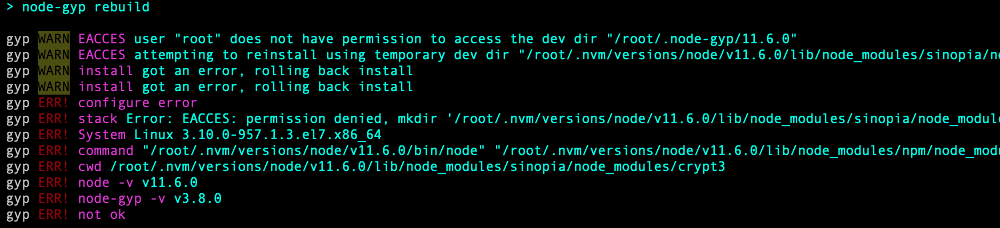
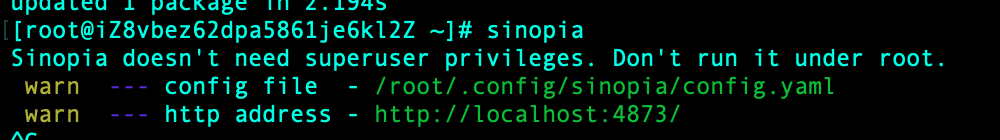
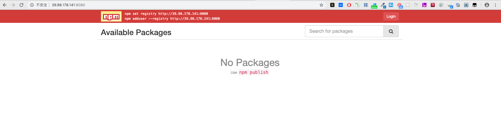

Sinopia (npm 私有镜像搭建)
Sinopia 是一个零配置的私有的带缓存功能的 npm 包管理工具
安装 Sinopia
安装 node
wget -qO- https://raw.githubusercontent.com/creationix/nvm/v0.33.11/install.sh | bash //下载nvm
source /root/.bashrc //执行
nvm install stable //下载node
npm -v
npm i sinopia -g
如果报错 以下错误不要慌

sudo chmod -R 777 /root
然后继续执行
npm i sinopia -g
启动 sinopia
sinopia

配置 Sinopia
vim 打开 sinopia 配置文件 config.yaml
vim /root/.config/sinopia/config.yaml
#
# This is the default config file. It allows all users to do anything,
# so don't use it on production systems.
#
# Look here for more config file examples:
# https://github.com/rlidwka/sinopia/tree/master/conf
#
# path to a directory with all packages
storage: ./storage #npm包存放的路径
auth:
htpasswd:
file: ./htpasswd #保存用户的账号密码等信息
# Maximum amount of users allowed to register, defaults to "+inf".
# You can set this to -1 to disable registration.
max_users: -1 #默认为1000，改为-1，禁止注册
# a list of other known repositories we can talk to
uplinks:
npmjs:
url: http://registry.npm.taobao.org/ #默认为npm的官网，由于国情，修改 url 让sinopia使用 淘宝的npm镜像地址
packages: #配置权限管理
'@*/*':
# scoped packages
access: $all #表示哪一类用户可以对匹配的项目进行安装 【$all 表示所有人都可以执行对应的操作，$authenticated 表示只有通过验证的人可以执行对应操作，$anonymous 表示只有匿名者可以进行对应操作（通常无用）】
publish: $authenticated #表示哪一类用户可以对匹配的项目进行发布
'*':
# allow all users (including non-authenticated users) to read and
# publish all packages
#
# you can specify usernames/groupnames (depending on your auth plugin)
# and three keywords: "$all", "$anonymous", "$authenticated"
access: $all #表示哪一类用户可以对匹配的项目进行安装
# allow all known users to publish packages
# (anyone can register by default, remember?)
publish: $authenticated #表示哪一类用户可以对匹配的项目进行发布
# if package is not available locally, proxy requests to 'npmjs' registry
proxy: npmjs #如其名，这里的值是对应于 uplinks
# log settings
logs:
- {type: stdout, format: pretty, level: http}
#- {type: file, path: sinopia.log, level: info}
# you can specify listen address (or simply a port)
listen: 0.0.0.0:8080 #默认没有，只能在本机访问，添加后可以通过外网访问
再次执行一下操作 检查配置文件是否出错
sinopia
访问 http://39.98.178.141:8080 地址出现下图 ，sinopia 安装成功了！

发布自定义包
添加 sinopia 仓库地址
npm install -g nrm
nrm add sinopia http://39.98.178.141:8080/
切换私有仓库
nrm use sinopia
发包
cd [name]
npm init -y
进入 package.json 文件
"name": "[name]", //必填项目名称
"version": "0.0.1" //必填版本信息
"repository": { //关联github 的库
"type": "git",
"url": "git@github.com:****/**.git"
},
添加新用户
npm adduser
?>账户信息保存在 /root/.config/sinopia/htpassw
登录 npm
npm login //输入用户名、密码和邮箱 （用户名：admin；密码：123456；邮箱：admin@xxx.com）
更新 npm 包 修改 package.json 文件夹中的 version 版本信息 执行
npm publish